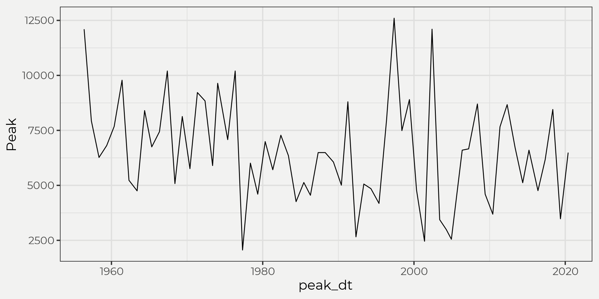
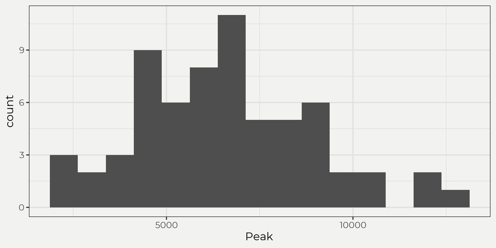
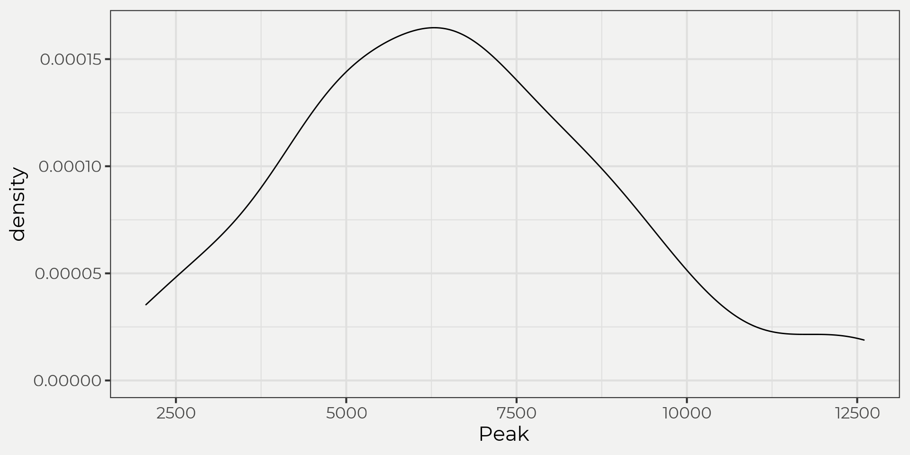
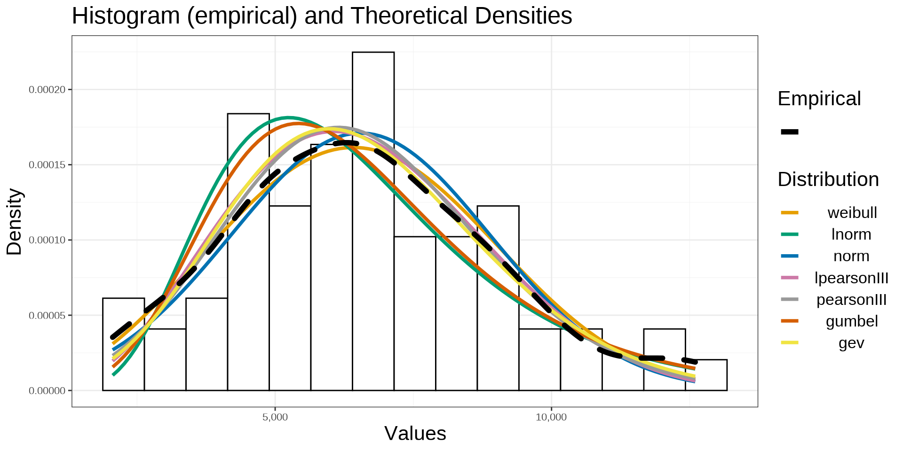

This will be part two of a three part blog series ‘Hydrology Distributions’ where we’ll look at different distributions in R using a handful of packages. A lot of times in hydrology you’ll end up collecting data (rainfall, snowdepth, runoff, etc) to try and fit a theoretical distribution for further analysis, e.g. frequency, probabilities, hypothesis testing etc. These probability distributions come in all shapes and sizes (literally) and can be confusing at times but hopefully we can break these concepts down without too much incredulity from those pesky/pedantic statisticians 😊. First (part I), we’ll look at descriptive statistics and probability distributions (pmf and pdf). Second (part II), we’ll bring in some data and compare distributions visually for some commonly used theoretical distributions in hydrology, e.g. normal (N), Lognormal (LN), Log-Pearson Type III (LP3), Pearson Type III (P3), Gumbel (G), Weibull (W) and Generalized Extreme-value Distribution (GEV). Third (part III), we’ll use a few goodness-of-fit tests to see which theoretical distribution best represents the underlying empirical distribution.
In (part I) we went over probability mass functions (pmf) and probability density functions (pdf) as well as introduced the cumulative distribution function (cdf). If you haven’t read (part I) please go back and read unless you are comfortable with these aforementioned topics. In part II we will go beyond the normal distribution and start looking at other distributions that are commonly used in hydrology. We will focus on recurrence intervals, which will only involve continuous distributions so discrete will have to be for another time 🙍. In part one we talked about pdf’s and how we can use theoretical pdf’s as a proxy for our sampled data. In that we just looked at the normal distribution but there are many other relavant pdf’s for hydroclimatic variables. We can use these theoretical pdf’s to our advantage since they have already been worked out mathematically! From there, we can introduce the idea of a frequency of occurrence and how one would go about calculating it along with how we might want to use it. But first we’ll go through the pdf’s mathematically and visually to get a better understanding of these different distributions.
I know it’s a lot but I think it’s helpful to just see the different pdf’s (\(f_{x}(x)\)) written out symbolically. Thus, we’ll look at the following distributions below: normal (N), Lognormal (LN), Log-Pearson Type III (LP3), Pearson Type III (P), Gumbel (G), Weibull (W) and Generalized Extreme-value Distribution (GEV).
\[ {\displaystyle {\frac {1}{\sqrt {2\pi \sigma^2 }}}\;e^{-(x-\mu)^{2}/2\sigma^2}} \]
\[ {\displaystyle {\frac {1}{\sqrt {2\pi \beta^2 }}}\;e^{-\ln(x-\alpha)^{2}/2\beta^2}} \]
\[ {\displaystyle {\frac {\lambda^\beta(\log(x)-\epsilon)^{\beta-1}e^{-\lambda(\log(x)-\epsilon)}}{\Gamma(\beta)}}} \]
\[ {\displaystyle {\frac {\lambda^\beta(x-\epsilon)^{\beta-1}e^{-\lambda(x-\epsilon)}}{\Gamma(\beta)}}} \]
\[ {\displaystyle \frac{1}{\alpha}\exp\bigg[ \mp\frac{x-\beta}{\alpha}-\exp\bigg(\mp\frac{x-\beta}{\alpha}\bigg)\bigg]} \]
\[ {\displaystyle {\alpha}x^{\alpha-1}\beta^{-\alpha}\exp\Big[-\Big(x/\beta\Big)^\alpha\Big]} \]
\[ {\displaystyle \frac{1}{\sigma}\,t(x)^{\xi+1}e^{-t(x)} \\ \text{where} \\ t(x)=\begin{cases}{\big (}1+\xi ({\tfrac {x-\mu }{\sigma }}){\big )}^{-1/\xi }&{\textrm {if}}\ \xi \neq 0\\e^{-(x-\mu )/\sigma }&{\textrm {if}}\ \xi =0\end{cases}} \]
So what do these things look like with real data? That is to say, what would these pdf’s produce if we fed it some observations? Well, that is what we’ll look into in the next part! Visualizing!
To do this let’s bring in a set of peak flows from a USGS gauging station. Then we can start to view the data in a few different ways: time series, histogram and density plots.
yaak_peak <- wildlandhydRo::wyUSGS(sites = '12304500')


By the eye test the data is skewed right (skewness), maybe a little heavy on the tails (kurtosis) and looks maybe lognormal? See, this is where the eye test doesn’t really help with the ultimate goal, i.e. use the theoretical distribution to estimate stuff! Before we get ahead of ourselves though let’s just look at the above distributions and try to understand what is going on intuitively, i.e. ‘can we find something close?’. To do that we’ll need to fit our empirical data (yaak_peak) to a theoretical one. Ahhh, ok back on track just plug and chug, right? Well, what the heck. Yes!
This is where it gets pretty mathy and is just better to use a package to do the math for you. When we solved for the normal distribution pdf in Part I it was easy since the parameters are the mean (\(\mu\)) and standard deviation (\(\sigma\)) of the sample distribution; however, this is not the case for all distributions! We need something called sample statistics or parameter estimation to accomplish this task but it’s too much for this blog post (maybe another time 😄).
We’ll just have R run the parameter estimations for us and then plot them against each other. Of note, some will be off and some close (think about why?).
library(smwrBase)
library(evd)
yaak_dist <- yaak_peak %>% wildlandhydRo::batch_distribution(Peak)
wildlandhydRo::plot_densDist(yaak_dist, facet = F) + geom_density(data = yaak_peak, aes(Peak, linetype = 'Empirical'), size = 2, key_glyph = 'path') + scale_linetype_manual(values = c('Empirical' = 2), label = '') + labs(linetype = 'Empirical') + theme(text = element_text(size = 16))
The graph above shows us both the empirical histogram and density against the theoretical distributions. What’s nice about this is we can start to see what it means by ‘fit a distribution’ to the empirical. This is an important step in frequency analysis as it will determine what you use for your final probabilities/results. As we can see, there are a couple distributions that are a little different than the others and a few that look really close to the empirical distribution. The idea is that the more data we collect the more our empirical data will fit a theoretical one. We can see that some distributions are underfitting and overfitting against the empirical at different values! This is where we need help and would need to use some hypothesis testing for ‘goodness of fit’ but we’ll deal with that in part III. For now, let’s assume the best fit distribution is a log-pearson type III (LPIII). In the next section we’ll dive into the LPIII and pick it apart. Just remember though that these are just pdf’s (part I) and we use our sample data to estimate the parameters. That’s it! Well, domain expertise, sample size and GOF is a nice addition as well 😉 but you get the point. It’s just a pdf!
\[ X_T = \overline{X} + KS \\ \displaystyle{\text{where,} \\ X_T = \text{magnitude of the hydrologic variable with a return period of}\ T; \\ \overline{X} = \text{mean of the hydrologic variable}; \\ S = \text{standard deviation of the hydrologic variable; and} \\ K = \text{frequency factor, a function of the return period} \ T\ \text{and the assumed frequency distribution function}} \]
This looks really similar to the Z score for a normal distribution, right?\[ Z=\frac{(\text{value} - \overline{x})}{s^2} \leftrightarrow Zs^2 + \overline{x} = \text{value} \]
\[ \displaystyle{\text{where,} \\ Z = \text{frequency factor (aka K)} \\ \text{value}= \text{magnitude of the variable aka} \ X_T} \]
That’s because it is! We are just now solving for a value (\(X_T\) magnitude with reoccurrence interval) instead of the \(Z\) or \(K\) value. Below we’ll work through an example using a LPIII distribution. Step-by-step.